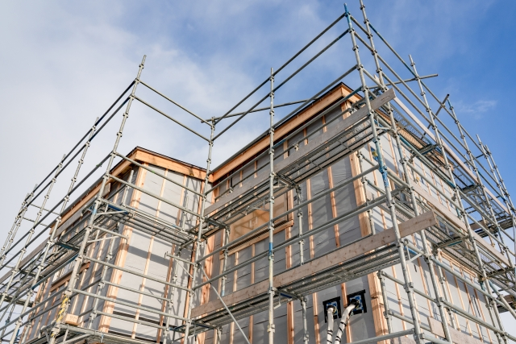

01
1983年設立
西区高木で、40年以上。
1983年10月の設立から、同じ西区高木に本社を構えています。店舗の前のバス停は「おしゃれホーミング前」です。
Home, Made Better
OUR WORKSさいたま市西区の内装
さいたま市西区高木で1983年から。リフォームも、売る・買う・貸すの相談も、ショーワ興業のおしゃれホーミングが自社でお受けします。

ABOUT
家の悩みは、リフォームだけでは片づかないことがあります。住み替えるか、直して住むか。相続した家を貸すか、売るか。
ショーワ興業は、不動産の売買・賃貸・管理と、設計・施工・メンテナンスを自社で手がけてきました。相談の入口が一つなので、話があちこちの会社に分かれません。
WHY CHOOSE US
01 / 04
01
1983年設立
1983年10月の設立から、同じ西区高木に本社を構えています。店舗の前のバス停は「おしゃれホーミング前」です。
02
不動産の売買・賃貸・管理・仲介から、企画設計・施工管理・メンテナンスまで、自社で一貫して行います。
03
建設業の許可、宅地建物取引業の許可、二級建築士。工事も不動産も、資格を持った会社が責任を持ちます。
04
ペットや小さなお子さまの事故を防ぐ網戸用格子「アミーゴ」を自社で開発し、実用新案登録を受けています。
WORKS
西区・さいたま市周辺の施工事例です。現場の写真を送るだけで、ここが自動で増えていきます。
屋根カバー工法色あせとひび割れが目立っていたスレート屋根に、断熱材一体の鋼板を重ね張りしました。2階の暑さが気になるというご相談からの工事です。
玄関・窓冬のすきま風が気になっていた玄関ドアを、断熱性の高いドアに交換しました。
外構門柱・フェンス・カーポートを、家の外観に合わせてまとめてリフォームしました。
BEFORE / AFTER

BEFORE色あせとひび割れで、雨もりが心配な屋根。
AFTER遮熱鋼板で、すっきり新しい屋根に。
REASONS
おしゃれホーミングが、西区で長く選ばれてきた理由です。
不動産と工事の両方を扱っているので、リフォームありきではなく、売却や住み替えも含めてご提案できます。
お客様と納得いくまで打ち合わせをしたうえで、自社の施工管理のもとで工事を進めます。
設計から施工、その後のメンテナンスまで自社の体制です。困ったときに、どこに電話すればいいか迷いません。
トステム（現LIXIL）の特約店として、玄関ドアや窓のリフォームもお任せいただけます。
CONTACT家のこと、まとめてご相談ください。
Contact us
Let's talk.


Build with us.
屋根のこと、玄関のこと、住み替えのことも。
まずはひとつの窓口へ。
Visit our works.
工事の相談も、売る・買うの相談も、まとめてお聞きします。お電話でもフォームでも、ご相談だけで大丈夫です。
お電話でも受け付けています 0120-439-154
PROPOSAL
株式会社ショーワ興業様の実際の情報・写真で制作します。施工実績の更新は「じーむれす」で写真を送るだけです。
12月末までのお申し込み・先着3社様限定
実績づくりのための特別価格です。
LINEなら、友だち追加して「レポート見ました」と送るだけでOKです。ご連絡いただいても、無理な営業はいたしません。気になる点だけのご質問も歓迎です。
デモ制作：A-SHOP／じーむれす（担当 大瀧雄真） ※このサイトはご提案用のデモで、検索エンジンには表示されません。